What, exactly, IS a computer? I always like to have a mental picture for my definitions, so I think of a computer as an information processor, kind of like Cuisinart for words and numbers and ideas.
Instead of vegetables, we feed our computer data; the raw facts figures and symbols we have to work with. The computer uses a program stored in memory, to turn that data into information that's organized, meaningful and useful. (Of course, if the data contains errors, then the information won't really be all that useful; that's the origin of a the term GIGO: Garbage IN; Garbage OUT).
The steps that your computer goes through to turn data into information is called the information processing cycle, and it consists of five different tasks:
- Input : retrieving the data to work on.
- Processing : organizing and analyzing the input.
- Output : displaying the results of the calculations.
- Storage : saving results and data for recall or further processing.
- Communication : working with other devices on a network.
A computer system consists of hardware, (the physical parts of your computer), and software (the programs used by the hardware), both working together to carry out these five steps.
Input and Output
Since the information processing cycle starts with input, we'll start there too, by asking: "What is an input device"? An input device is a piece of hardware that's used for two purposes:
- to enter data, such as the text in a letter, or the numbers in your checkbook.
- to enter instructions for the computer to carry out; that is, to tell the computer what to do
Here are some common computer input devices:
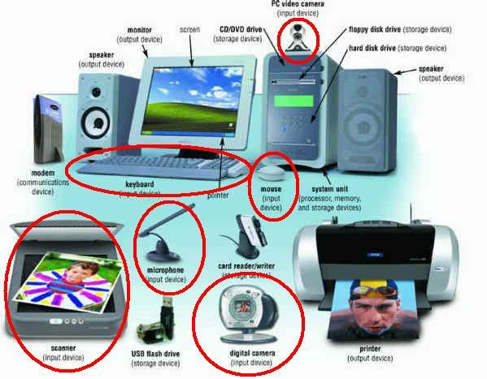
These devices include:
- a pc video camera, used as a Web cam, or to take movies that are stored and edited on the computer
- a keyboard, which is used both for instructions and data
- a digital camera, used to take still pictures which can be stored, edited, and printed on the computer
- a microphone which is used to record sound on the computer
- a mouse, which is often used to issue instructions, but which can be a source of data as well
- a scanner, which can digitize photographs, or which can be used to convert printed text to a form usable in a word processor (OCR)
Output Devices
If input devices give you a way to talk to your computer, then output devices let your computer "talk back". An output device is a piece of hardware that the computer uses to display information. The most common output device is the one you're looking at right now: your computer's screen, or monitor.
Of course, it's possible you're not looking at a monitor at all; that you are, instead, reading these lessons off the printed page. If so, then you're using the product of the other major output device, the printer, which is used to produce what is called hard-copy output.
Finally, not all output is visual; your computer is equally adept at producing audio output using speakers, just like your stereo.
The System Unit
We've got input, we've got output, but where's the computer? Where does the processing take place? The computer itself is usually located in a case that is called the system unit, often described as:
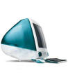
The "box-like case" part describes most IBM-compatible PCs which usually look something like that pictured earlier. Not all systems look like boxes, though; the original Apple iMacs, for instance, had their system unit combined with the monitor like the picture on the left, while the second-generation iMacs had a "mushroom like", rather than "box-like" case, like the picture on the right. The latest iMacs use a sleek, all-in-one flat-panel combined monitor/system-unit design.If you examine a laptop computer, you'll usually find the system unit beneath the computer's keyboard. In any event, the important thing to remember is that the system unit contains the "real" computer itself.
The CPU and Memory
While the system unit itself is filled with hundreds of different components, the two main parts of the "computer itself" are:
- the Central Processing Unit or CPU
- memory
The CPU is the "brain" of the computer, the part that actually does calculations, the part that "plays" the programs you load. When you run a program like Microsoft Word, its instructions are carried out by the CPU. However, neither Microsoft Word, nor the papers and letters you write with Word, are "loaded into" the CPU. The CPU can only execute a handful of instructions at any given time; the rest of the instructions, (along with that French paper you're writing), are stored in an area of the System Unit called memory.
Memory, (usually called RAM, or Random Access Memory), is a temporary holding place for data and instructions, used only while your program is running. This is an important and fundamental concept: the CPU cannot act on instructions or data stored on a CD or a hard disk; instead, all data and all instructions must be loaded into memory, where it can then be accessed by the CPU.
The word temporary is also a fundamental concept. All data and all instructions in memory are retained only while your computer is "powered up". When you turn off the power to your computer, all the work you've done on "Balzac versus Bluto" is completely erased. If you want your documents to last "beyond the moment", you'll have to look at our next component, storage.
Storage
Storage is sometimes called persistent memory, or secondary storage. (Primary storage refers to dynamic memory, which we just discussed.) If you want the work you've done on your computer to persist, then you have two choices.
- leave the power on forever, making sure your programs are never closed and that your programs never crash, or
- learn about storage
The second option is the wise course of action.
Storage consists of two parts:
- storage media where your data is actually stored
- a storage device, the piece of hardware that records or retrieves your data
These two parts are tightly linked: if you use a CDR as your storage media, then you must use a CD Recorder as your storage device—you can't read or write your CD using the floppy disk drive, for instance.
Hard Drives
The hard disk is the main form of secondary storage used by today's computers.
To picture a hard disk, imagine a stack of pancakes. Now, imagine that each pancake is a rigid metal platter, coated on both sides with magnetic media, and mounted on a rapidly turning spindle. That's the hard drive, which is usually located inside the system unit.
Hard drives have two advantages over all other storage media:
- they have very large capacity; most consumer-level PCs shipping today have at least a 120 GB (GigaByte) drive. (that's the equivalent of about 100,000 floppy disks; even at a penny apiece, using floppies can't compare with a hard-disk for cost).
- Hard disks arealso very, very fast, which means that programs and data are loaded and stored much faster. Even when programs are delivered on other media, such as CD ROM, they are almost always copied to your computer hard disk for normal use, because of the performance enhancement.
Examining Memory
As a budding Java programmer, You'll need to have a basic understanding of memory, the CPU, and how data is stored inside the computer. In the rest of this lesson, we'll be doing some hands-on examination of your own computer's memory, using a program called debug. If you're reading this at a Windows-based computer, feel free to follow along if you like. (This portion of the lecture is based on material developed by Professor Bobby Hoggard from the Computer Science Department at East Carolina University, and is used with his permission.)
Data Representation
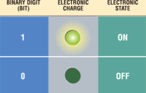
Before you can really understand how memory or your CPU works, you need to understand a little bit about how instructions and data are stored in the computer.Transistors, the basic building block of all integrated circuits, have only two states, kind of like a light switch. A transistor, at any given time is either on, meaning that it can act as a pathway for an electrical circuit, or off, meaning that it won't conduct electricity.
Because of this on/off characteristic, each transistor in memory or on a CPU can be used to store a single binary number with one of the two values 0 (if the transistor is off) or 1 (if the transistor is on). We call this single transistor, that stores one binary number, a bit or binary digit.
 Of course, by itself, a single bit is not very useful,
but, when combined with other bits, they can be used to
represent more things like decimal numbers, text, and
even program instructions.
Of course, by itself, a single bit is not very useful,
but, when combined with other bits, they can be used to
represent more things like decimal numbers, text, and
even program instructions.
Almost all computers today, work with groups of eight bits, called a byte, (b-y-t-e, not b-i-t-e). For what its worth, a group of four bits, or half a byte, is called a nybble, also with a y instead of an i.
When treated as a binary number, a single byte can store 256 different values, and those values can be treated as numbers, characters, or instructions. This translation between the raw byte values stored in memory and the meaning that we assign to those bytes is known as encoding.
Physical Memory
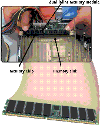
When a computer runs, both the instructions that it carries out, and the data that it processes are stored in memory. Memory is simply a particular kind of integrated circuit, mounted on a circuit board called a memory module.The picture shown here is a DIMM or Dual Inline Memory Module, that has chips mounted on both sides of the circuit board. The memory module fits into a special slot on the motherboard called a memory slot.
The key to understanding how memory works is to realize that it is addressable; each byte of memory in your computer has its own unique location, which is called its address. Memory works like the seats on a passenger train or an airplane, or like the PO boxes at the Post Office.
Because of this addressability, when your program runs, the CPU can say things like: "add the two numbers located at the addresses 120 and 122", or "execute the instruction you'll find in memory at address 1000".
Random Access Memory
Usually when we talk about a computer's memory, we are referring to Random Access Memory or RAM. When we say "my computer has 2 gigabytes of memory" we are referring to the amount of RAM the computer has. This kind of memory is also called main memory or primary storage.
There are two important things you need to understand about RAM:
- First, RAM is read/write memory; it can be changed by the CPU as your program runs. RAM is where your letters are stored while you are typing them, and where different programs are loaded as you use your computer. Since it is read/write memory, its contents aren't fixed.
- Second, RAM is volatile. That means it only retains the data you store as long as the computer is turned on. Once you turn the power off, your data is lost. That's why secondary storage such as disk drives are so important.
Text and Memory
Numbers are one important kind of value that is manipulated by computers. Most of us, however, use characters much more often than numbers. Characters, and groups of characters, (sentences, paragraphs, chapters, books, libraries), form the basis for human language and, arguably, civilization.
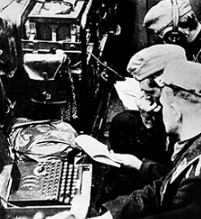
The first computer applications were, interestingly enough, all about words, specifically the secret codes used during World War II. The first research into "computing" as we know it was carried out by the mathematician, Dr. Alan Turing, and his collegues at Blechley Park in England, where they built Collosus, a code-breaking computer designed to break Germany's Enigma cypher. Once the war was over, however, computers moved out of the
academic and espionage communities and into the corporate
arena, where they were seen as glorified accounting machines.
It wouldn't be until the 1970s, with the Wang word processor,
that businesses realized that computers could deal with words
as well as numbers.
How Characters Are Stored
The problem with storing characters in a computer is that, to put it bluntly, you can't. Computers can only store and process binary numbers—nothing else. That means to store text inside the computer, it must be represented as a series of binary numbers; it must be encoded.
Converting between real-world integers and binary numbers is fairly natural, and converting between real-world floating-point numbers and binary numbers is not much more difficult. But how do you convert between binary numbers and characters?
 The answer, of course, is simple. You simply use an
agreed-up correspondence between a number and a character,
like Morse-Code for instance. (You do remember "SOS", don't
you?) All that has to happen is for everyone to agree that
the letter 'A' is represented by the binary number 1, the
letter 'B' is represented by the binary number 2, and so
on. Then storing text becomes easy.
The answer, of course, is simple. You simply use an
agreed-up correspondence between a number and a character,
like Morse-Code for instance. (You do remember "SOS", don't
you?) All that has to happen is for everyone to agree that
the letter 'A' is represented by the binary number 1, the
letter 'B' is represented by the binary number 2, and so
on. Then storing text becomes easy.
Instead of using Morse Code, computer makers designed their own number-to-character encoding schemes, such as EBCDIC used on IBM mainframes, and ASCII used on PCs. Recently, with the advance of the Internet, Unicode has become the standard character encoding used across the world. You'll learn more about how Java uses Unicode later in the semester. For right now, I'll use the terms ASCII and Unicode interchangably.
Examining Memory
So far, our exploration of memory has been a little theoretical; I'd like to make it a little more concrete by having you look at the actual contents of memory. To do this, we'll use a program named debug, which comes with Windows.
Debug is an interesting and versatile program, especially if you are interested in seeing how your computer works. With debug you can:
- View and change the contents of memory
- View, create, and modify any type of file
- Turn assembly language programs into executable code
- Convert machine language files into assembly source files
- Examine any and all of the CPU registers
- Trace the execution of a program – step by step
We'll take a closer look at the CPU and the programming aspects of debug in the next lecture. For right now, though, I want to use debug to examine memory; specifically we'll:
- look at, and change, the contents of a text file
- look at the BIOS inside your computer
- look at, and change the contents of video memory
We'll start by creating a text file, using the Notepad program, and then examining the file in debug.
Getting Started
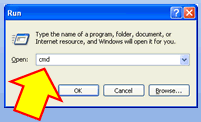
Open a command window by holding down the Windows key and pressing R to open the Run dialog; then type cmd and press Enter. (You can also open a command window by selecting the icon on the Accessories menu.)When the Command window opens up, start the Notepad program by typing notepad myfile.txt and pressing Enter. When Notepad opens, answer "Yes" to create the file, and then, type the phrase "Sam was a man", without the quotes, pressing Enter after each line as you can see here.
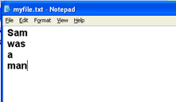
If you count the characters in your file, you'll see that there are ten letters so you might think that your file should be 10 bytes long, since each character should use up one ASCII byte. Let's see if that's correct. Close Notepad, switch to the Command window you are using
and type DIR, followed by Enter. Search through the listing
until you find myfile.txt as shown here:
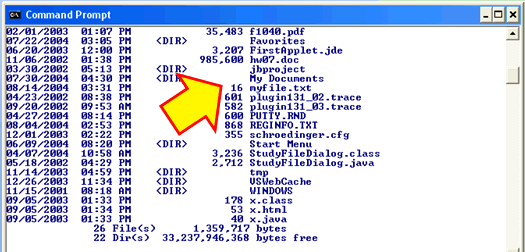
As you can see, the size of the file is really 16 bytes, not 10 bytes. Where did the extra 6 bytes come from? Let's use the debug program to find out!
Starting Debug
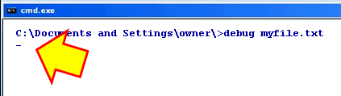
At the command prompt, type debug myfile.txt and press ENTER. Doing this:- starts the debug program
- loads myfile.txt into memory at address 100 (hexadecimal)
- and displays the debug prompt, which is a plain hyphen, waiting for you to type a command.
We want to see the "raw" memory after loading the file, so
type d, (which stands for dump or
display memory), and press Enter.
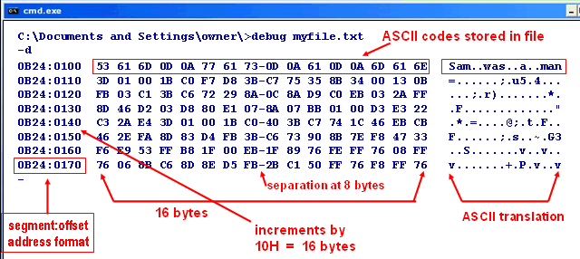
Addresses
On the left side of the display are the memory addresses that we discussed earlier. On Intel computers, addresses are organized into two parts, called a segment and offset, but you don't have to worry about that. Just notice that the first line of memory that is displayed starts at address 100, the next line starts at address 110, the third line at address 120, etc.
Raw Bytes
Each line on the display contains 16 bytes, and each byte is displayed in the hexadecimal number format we discussed earlier. For instance, the first byte is the hexadecimal number 53, which is 5 sixteens + 3 ones, or the decimal number 83.
Each row contains a separator in the middle at the 8-byte mark. That's just to make the display easier to read.
ASCII Translation
On the right-hand side is the ASCII translation of each line of memory. Since we started debug using myfile.txt, the ASCII codes from the file were stored in memory at address 100. Note, for instance, that the first byte, which is 53H or 83 decimal, which is the capital letter "S" in the ASCII chart. On the right-hand side, you can see the ASCII translation of each of the bytes.
So, where did we pick up the extra 6 bytes? If you look
in the ASCII translation, you'll see two periods after
each word. Debug only shows the printable ASCII
characters in its display; all other characters are
replaced with periods.
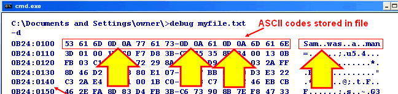
If you look back at the "raw" memory, though, you can see that the periods correspond to three instances of the sequence OD OA, which are the ASCII values 13 and 10.
Windows Text Files
Those two invisible characters were inserted into your file when you pressed the Enter key after each word in Notepad. If you'd typed your text without pressing the Enter key, your file would only contain 10 bytes, as we expected.
Since you pressed the Enter key after each word though, the file ended up being 16 bytes long. The first byte, the ASCII value 13 is called the Carriage Return, after the typewriter carriage that sends the platen back to the beginning of the line. The second character, ASCII value 10, is called the newline or line feed character, and moves the platen down to the next line.
Video Memory
Let's look at another region of Random Access Memory, called Video Memory. The organization of video memory used by your graphics card is pretty complicated, so we'll restrict our exploration to text-mode, the portion of memory used to display the text shown inside the Command window you're using right now.
To see the text mode video memory, you use the same dump command (d) you used to view your text file, but you supply an address to view. Text mode video memory starts at address B800:0000 and takes 160 bytes per line; one byte for each character and one byte for the color information about each character. Since line one on our display is all blanks, let's look at line two, which starts at address B800:00A0.
Type –d B800:00A0, press Enter, and you'll see
something similar to this:
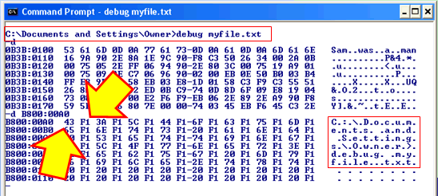
Look at the ASCII area, and you'll see the same text that appears on line two of the screen. (I've outlined the areas in red in the pictures here.)
If you look at the "raw" bytes for the line, you'll see that the first byte, 43 in this case, represents the ASCII character, while the second byte, F1 in this case, represents the color characteristics. The first nybble, F, is the background color, while the second nybble, 1, is the foreground color. (If you are following along on your own computer, you'll most likely see 07 instead of F1, unless you've changed the screen to display blue text on a white background as I have.)
Changing Memory
You can change the value stored in a byte of memory by using Debug's enter command, (abbreviated as just e). To use the enter command:
- type e and then a space
- followed by the address of the first byte you want to change and another space
- followed by a list of bytes to enter into memory.
You can enter several bytes at once; just separate each byte with a space. Press the Enter key to complete the change to memory.
Changing an ASCII Value
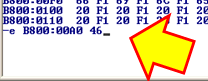
Let's change the letter C that appears at the beginning of the second line to an F. The ASCII value for C in hexadecimal is 43, while the ASCII value for F is 46. Type -e B800:00A0 46, and press Enter.
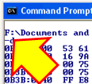
The result of placing the value 46 into the memory cell located at address B800:00A0, is that the C turns into an F.Changing an Attribute Byte
Let's make the new display as red on a yellow background. Since address B800:00A0 is the ASCII character, which was C and is now F, then the next byte, the one at address B800:00A1, must be the one that controls the color of the character.
On the PC, yellow is represented by the hexadecimal number E, and bright red is represented by the binary number C. If we combine them as EC we have red text on a yellow background, and if we combine them as CE, we get yellow text on a red background.
Go ahead and type -e B800:00A1 EC and press Enter. What happens?
Examining the BIOS
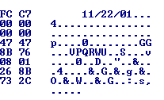
Not all computer memory is volatile. The BIOS is a permanent program, burned into a set of read-only memory (ROM) chips on your motherboard. BIOS stands for Basic Input Output System. The BIOS contains the code that runs when your computer first starts up.We'll take a closer look at this startup code later; ; right now I want you to look at another part of the BIOS, the BIOS revision date. The ROM BIOS starts at address FFFF, and the BIOS revision date is at offset 0005.
Display the BIOS revision date by typing -d FFFF:000. Look in the ASCII display area, and you'll see the date when your particular BIOS was last revised. On my HP Pavillion, I see 11/22/01.
Changing ROM
ROM cannot be changed. You can prove it to yourself by using Debug. Type in -e FFFF:0006 32. This command attempts to place the ASCII character "2" into the second byte of the BIOS revision date, replacing the "1" that's there now.
After executing this command, type -d FFFF:0005 to display the BIOS revision date again. As you can see, nothing has changed. ROM memory is permanent.
Coming Up Next...
That's it for memory and Debug; use the -q command to quit.
In the next section, let's turn our attention from hardware to the softer side of the computing world, as we look at different types of computer software. We'll also use Debug to learn about the computer's CPU, and see how a machine language program is written and how it works.